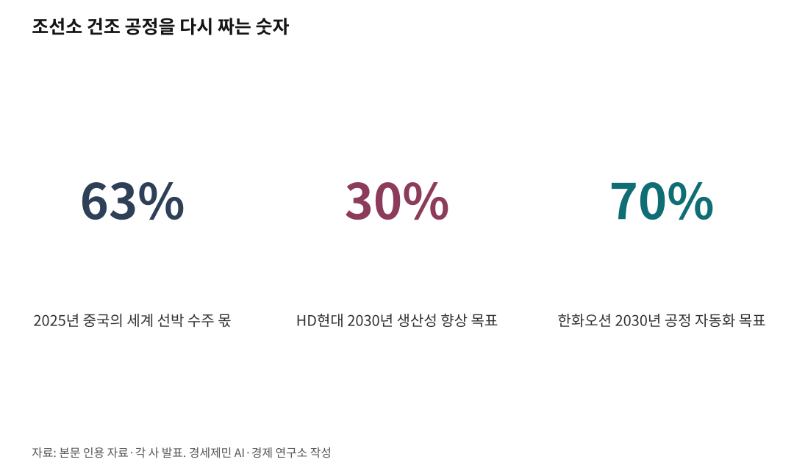
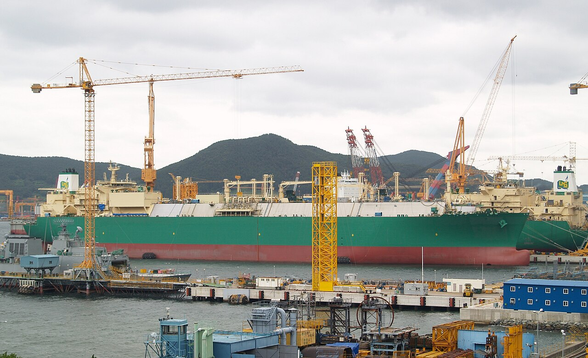

[해양 AI 융복합⑧] 사람이 모자란 조선소, 데이터와 로봇으로 다시 짜는 건조 공정
중국 지난해 세계 수주 63%, 숙련공 빈자리를 메우는 용접로봇과 데이터
HD현대 생산성 30%, 한화오션 공정 70% 자동화, 2030년을 향한 목표치
AI경제저널=김갑봉 기자 | 자율운항선박도 결국 조선소 도크에서 나온다. 그 조선소에는 숙련공이 모자라고, 중국 조선소는 2025년 세계 선박 수주량 63%를 가져갔다. 2026년 1~9월에는 76%다. 조선 3사가 빈자리를 데이터와 로봇으로 어떻게 메우는지 짚는다.
절반으로 줄었던 조선소 일손
조선업에서 일하는 사람은 2014년 20만3441명으로 가장 많았다. 2022년에는 9만명대 초반까지 내려가 절반 넘게 줄었다.
불황기에 조선소를 떠난 숙련공 상당수는 일감이 돌아온 뒤에도 돌아오지 않았다. 그 빈자리를 이주노동자가 채운다. 2024년 기준 조선업 노동자 열 명 가운데 두 명꼴이 이주노동자다.
정부는 조선업 이주노동자 비중을 줄이려 한다. 김영훈 고용노동부 장관은 2026년 2월 9일 울산 타운홀미팅에 나왔다. 그는 숙련 기능인력 비자가 "무한 확대돼 원청 일자리까지 잠식해 들어가는 것은 지속 가능하지 않다"고 말했다.
배는 여러 덩어리로 나눠 만든 블록을 이어 붙여 짓는다. HD현대삼호 서정훈 상무는 "블록 용접 작업은 전체 인원의 50%가 투입된다"고 전자신문에 말했다.

가상 조선소부터 세운 HD현대
HD현대는 2021년 '미래형 조선소(FOS)' 사업을 시작했다. FOS는 '조선소의 미래(Future of Shipyard)'를 줄인 말이다.
사업은 2030년까지 세 단계로 나눠 간다.
1단계 '눈에 보이는 조선소'는 2023년에 마쳤다. '트윈 FOS'는 실제 조선소를 가상공간에 그대로 옮긴 것이다. 여기서 생산과 설비, 물류 정보를 실시간으로 본다.
2단계 '연결·예측·최적화된 조선소'는 올해 완성이 목표다. AI가 쌓인 자료를 학습해 인력과 설비를 가장 알맞게 운용할 조건을 찾는다.
3단계는 2030년 '지능형 자율운영 조선소'다. HD현대는 이때까지 생산성 30% 향상과 건조기간 30% 단축을 목표로 삼는다.
2026년 7월에는 HD한국조선해양이 지멘스 디지털 인더스트리 소프트웨어와 '차세대 마린 플랫폼' 계약을 맺었다. 이 플랫폼은 설계부터 생산, 품질관리, 유지보수까지 공정 자료를 3차원 데이터 하나로 묶는다.
두 회사는 10월 13일 부산 해운대에 '글로벌마린센터'를 열었다.
양사 전문인력 50명이 이 플랫폼을 다듬고, 울산과 영암 조선소에서 실증한다.
용접 불꽃 앞에 선 로봇
HD현대삼호 조선소에서는 용접로봇 100대가량이 블록 용접을 맡는다. 회사는 숙련공의 용접 속도와 방법을 데이터로 만들어 로봇에 넣었다.
이곳에서 작업자는 하루 많아야 30개 작업 구간(셀)을 용접한다. 로봇을 쓰면 50개 가까이 해낸다. 서정훈 상무는 로봇을 들인 뒤 "리드 타임을 20%가량 단축했다"고 덧붙였다. 리드 타임은 일을 시작해 마치기까지 걸리는 시간이다.
한화오션은 2030년까지 생산 공정 70% 자동화를 목표로 삼는다. 스마트야드에는 1600억원을 들였다.
한화오션 거제사업장에서는 '탑재론지 용접로봇'이 밀폐된 블록 안으로 들어간다. 먼지와 열기 속에서 사람이 하던 용접을 대신 한다. 회사는 2026년 6월 NC AI와 손잡았다. 용접할 이음매를 카메라로 스스로 알아보는 모델을 함께 만든다.
사람 모양 로봇도 조선소 문을 두드린다.
HD현대는 2026년 3월 미국 페르소나 AI 등과 두 발로 걷는 용접 휴머노이드를 실증하는 협약을 맺었다. HD현대 관계자는 "초창기 실증 단계"라며 어느 공정과 배 종류에 쓸지 아직 정하지 않았다고 디일렉에 말했다.
데이터로 바뀐 설계실과 관제실
삼성중공업은 설계 자동화에 힘을 싣는다. 2025년 10월 29일 거제에서 조선해양업계 첫 설계 자동화 플랫폼 'S-EDP'를 공개했다.
S-EDP는 도면과 문서, 계산서를 자동으로 만든다. 설계 데이터와 2차원 도면, 3차원 모델이 서로 어긋나지 않게 맞춘다. 여러 사람이 웹으로 동시에 접속해 함께 작업한다.
삼성중공업은 2030년까지 설계 자동화율을 두 배 넘게 끌어올릴 계획이다. 회사는 이 플랫폼을 국내외 모든 사업장에 깔고, 손잡은 해외 조선소에도 팔 계획이다.

한화오션은 2021년 조선업계에서 처음으로 거제사업장에 디지털 생산센터를 세웠다. 블록 위치와 공정을 드론과 사물인터넷 센서로 실시간 들여다본다. 바다에서 시운전하는 배 상태도 육지에서 확인한다.
정부도 거든다. 산업통상부와 해양수산부는 2026년 10월 12일 거제·부산 조선 M.AX 사업을 내놨다. 삼성중공업과 한화오션이 설계·생산 정보를 기자재 기업과 나누는 플랫폼을 들이는 내용이다.
목표와 한계 사이
조선소는 같은 제품을 되풀이해 찍어 내는 공장이 아니다.
배마다 설계와 구조가 다르고, 일하는 공간도 좁고 불규칙하다. HD현대 측은 단순 용접은 90% 넘게 로봇이 맡을 수 있다고 파이낸셜타임스에 설명했다. 곡면 블록 용접과 페인트 칠, 배관은 아직 어렵다고 했다.
영국 스트래스클라이드대 아미르 보르드바르 등 연구진은 2026년 2월 '해양과학·공학 저널'에 검토 논문을 냈다. 2010년부터 2025년까지 조선소 생산 디지털화 연구 92건을 견줘 본 글이다.
연구진은 디지털 트윈과 AI 연구 다수가 조선소 전체 성과를 오래 검증하기보다 시스템 통합과 자료 연결에 무게를 둔다고 분석했다. 생산 자료가 대부분 기밀이라 다른 연구자가 결과를 다시 확인하기도 어렵다고 밝혔다.
양종서 한국수출입은행 수석연구원은 중국 조선업이 정부 지원으로 자동화 시행착오 비용을 상대적으로 쉽게 흡수한다고 파이낸셜타임스에 말했다.
생산성·건조기간 30%, 공정 70%, 설계 자동화 두 배는 모두 아직 회사가 내건 목표치다. 서정훈 상무는 로봇 도입 뒤 "기술을 배워 작업을 하려는 사람도 많이 나타나고 있다"고 말했다.
참고문헌
가. 기업·정부 발표자료
· "SHI Accelerates Full-speed Transformation into a Smart Shipyard", 삼성중공업 보도자료, 2025.10.29., https://samsungshi.com/En/Notice_news_view.aspx?no=128
· 「K-조선 모두의 힘으로, M.AX 상생항로 나선다」, 산업통상부 제조산업정책관 조선해양플랜트과, 2026.10.12., https://eiec.kdi.re.kr/policy/materialView.do?num=287966
나. 논문
· Amir Bordbar, Mina Tadros, Amin Nazemian, Myo Zin Aung, Konstantinos Georgoulas, Panagiotis Louvros, Evangelos Boulougouris, "Digitalisation of Shipyard Production Planning: A Review of Simulation, Optimisation, AI, and Digital Twin Methods (2010–2025)", Journal of Marine Science and Engineering 14(4), 396, 2026.2.21., https://mdpi-res.com/d_attachment/jmse/jmse-14-00396/article_deploy/jmse-14-00396.pdf
다. 언론 보도
· "K조선, 9월 수주 127% 급증 … 점유율 21% 회복", 뉴데일리, 2026.10.7., https://biz.newdaily.co.kr/site/data/html/2026/10/07/2026100700081.html
· "韓 조선, 9월 선박 수주량 127% 급증…누적 실적은 中이 76% 장악", 서울경제TV, 2026.10.8., https://www.sentv.co.kr/article/view/sentv202610080126
· "국내 조선업계 9월 선박 수주량 127% 증가…중국과 격차 좁혀", 투데이에너지 신일영, 2026.10.12., https://www.todayenergy.kr/news/articleView.html?idxno=304040
· "HD현대·지멘스, 부산 글로벌마린센터 개소…디지털 혁신 가속", 서울신문, 2026.10.13., https://www.seoul.co.kr/news/economy/industry/2026/10/13/20261013500220
· "HD현대·지멘스, 전문인력 50명 모여 디지털 조선 혁신 이끈다", 머니투데이, 2026.10.13., https://www.mt.co.kr/industry/2026/10/13/2026101309001822144
· "HD현대, 지멘스와 부산에 글로벌마린센터 개소…조선업 디지털 전환 가속", 더퍼블릭, 2026.10.13., https://www.thepublic.kr/news/articleView.html?idxno=322094
· "K-조선, 제조공정 AI 전환 확대 위해⋯2030년까지 1.4조원 투입", 아이뉴스24, 2026.10.12., https://www.inews24.com/view/2013938
· "한·일 조선, '로봇'으로 중국 추격한다…조선소 자동화 경쟁 가속", 해사신문 조선산업팀, 2026.10.4., http://www.haesanews.com/news/articleView.html?idxno=151697
· "중국 수주 독주에 쫓긴 한·일 조선소, 로봇 깔아 골든타임 번다", 글로벌이코노믹 김주원, 2026.10.5., https://www.g-enews.com/article/Global-Biz/2026/10/202610050627306466fbbec65dfb_1
· "2030년 지능형 조선소 구축… 선박건조 생산성 30% 향상", 문화일보 이근홍, 2025.9.4., https://www.munhwa.com/article/11530586
· "점점 더 똑똑해지는 조선소…조선업계 디지털 전환 '3사 3색'", 이코노미스트 박세진, 2024.10.4., https://economist.co.kr/article/view/ecn202409190037
· "조선업이 AI를 만나 똑똑해진다…'스마트 조선소' 경쟁", 비즈한국 전현건, 2024.2.14., https://bizhankook.com/articles/27102.html
· "HD현대, 조선소 용접 휴머노이드 상용화 착수…'스마트조선소 전환 가속'", 해사신문, 2026.3.25., http://www.haesanews.com/news/articleView.html?idxno=146567
· "로봇이 용접 '척척'… 한화오션, 스마트 조선소 박차", 시대 김동욱, 2023.10.30., https://www.sidae.com/article/2023103007540088893
· "조선소에 '자율 용접 AI' 투입되나…NC AI, 한화오션과 공동개발", 데일리안 조인영, 2026.6.4., https://www.dailian.co.kr/news/view/1652132/
· "韓조선업 세계 일등 지키려면 5년간 4만3천명 투입해야", 헬로티 김진희, 2022.10.23., https://hellot.net/news/article.html?no=72274
· "K-조선 호실적 속 이주노동자 딜레마…'민관, 중장기적 관점 고민 필요'", 더팩트 최의종, 2026.2.13., https://news.tf.co.kr/read/economy/2292723.htm
마. 사진 출처
· [사진4] Towel401 at English Wikipedia, "LNG Carrier DSME.jpg", 위키미디어 공용, 퍼블릭 도메인, https://commons.wikimedia.org/wiki/File:LNG_Carrier_DSME.jpg
※ 이 기사는 인공지능을 활용해 작성했습니다.
관련기사
- [해양 AI 융복합⑨] 미 해군 함정 고치는 한국 조선소, AI 정비 앞에 놓인 군 데이터 빗장
- [해양 AI 융복합⑦] 이미 바다에 뜬 배에 올라탄 AI, 항로·엔진·선내 안전까지
- [해양 AI 융복합⑩] 부두 하나서 효율 17% 올린 디지털 트윈, 부산항 전체로 넓히는 388억원 계획
- [해양 AI 융복합⑥] AI 완전자율운항선박, 7년 4600억원 기술개발 첫발
저작권자 © AI경제저널 무단전재 및 재배포, AI학습 및 활용 금지